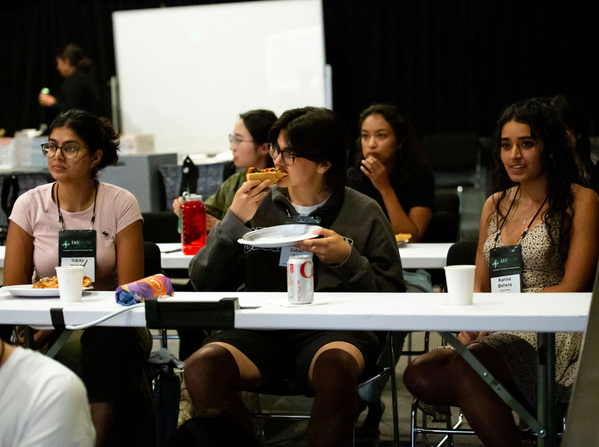

The Society of Mathematics
Leadership
Molly Roughan
President
I'm Skyler, a fourth year Undergraduate student in Mathematics. I have a strong love for abstract math, and firmly believe that the concepts treated in upper level math courses can and should be made accessable to everyone. As president of the Society of Mathematics, my goal is to foster a sort of coffeehouse discussion driven by individual interest and passion, where ideas and knowledge are shared and everyone comes away having learned and enjoyed themselves. My interests lie mainly in pure algebraic geometry, extending to complex algebraic geometry, and commutative algebra / homological algebra. In the next few years I'm hoping to expand my knowledge of derived geometry, intersection theory, and stacks / moduli spaces, but I can't honestly say I know much about that yet. I also nurse a passing interest in low dimensional topology and homotopy theory, and try to keep up with what's going on in physics.
Please feel free to send questions or thoughts about math or the club itself to skyler@bu.edu.


Zoe Siegelnickel
Vice President
I am a Junior, but this is my second year at BU (I’m a transfer student). I am the vice president of the Society of Math, and help organize the weekly meetings and any other events we host. I am interested in mathematical physics, specifically QFT, but I enjoy most things that are in some way algebraic. You can reach me at z0e@bu.edu
Zach Zobair
Head of the Colloquium
My name is Zach and I am in my fifth year at BU doing the BA/MA program in pure mathematics. In the Society of Mathematics, I am the head of the undergraduate colloquium, and so I organize those talks, as well as helping out with our weekly society meetings! I love sharing mathematics with people who are also super interested in math, and I think the colloquium is a great avenue for that. My interests in math lie broadly in things which feel algebraic. Recently I have been enjoying some algebraic number theory. You can reach me at zzobair@bu.edu.

Iker Perez
Treasurer
Hey! I’m Iker, a sophomore studying Mathematics, Computer Science, and Sociology at Boston University. My biggest interest in math is model-making and algorithms, specifically as they relate to improving and observing the social world. I am the treasurer for the Society of Mathematics, so I’m in charge of dealing with our budget and spending, so if you’re dealing with something related to that, I’m your guy! I’m not completely sure what sort of super-high-level math interests me yet, but that’s alright, the world is my oyster! I invite you to come and keep exploring math and what it has to offer with me and the other members of the club. You can also reach me at isperez@bu.edu.
Past Leadership